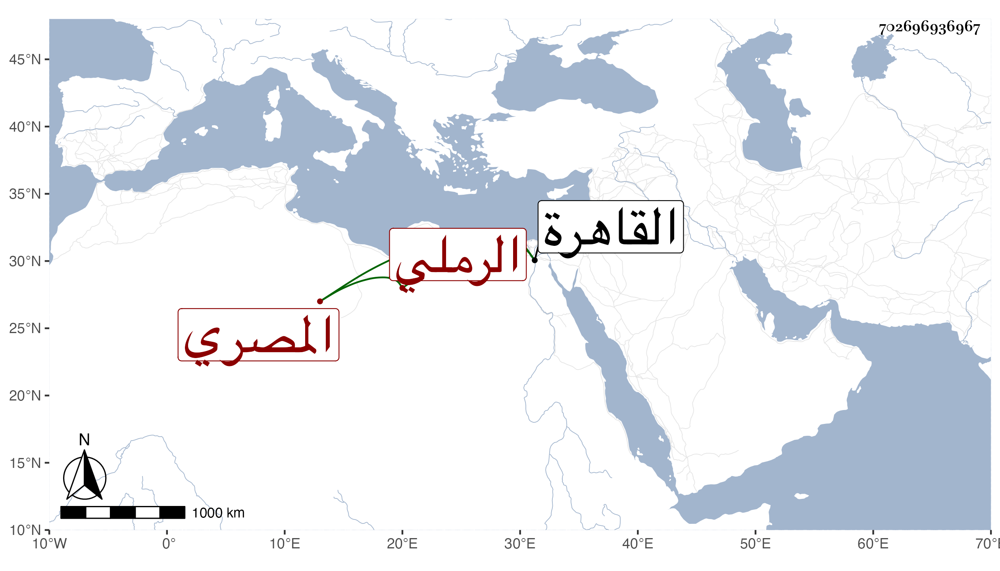

0902Sakhawi.DawLamic.ITO20230111-ara1.EIS1600.702696936967
Biography ID: 702696936967
538
حسين بالتصغير بن إبراهيم بن حسين بن محمد بن علي بن عثمان بن الكنك بدر الدين الرملي الأصل المصري ويعرف بابن الكنك بنون بين كافين مكسورات ، ولد سنة سبع وستين وسبعمائة ولقيته بالقاهرة فأنشدني لفظا مما أنشده البدر البشتكي لنفسه في البدر بن الدماميني المخزومي :
| تبا لقاض لا ترى أحكامه | إلا على المنثور والمنظوم |
| خان الشريعة إذ أطاع فا | وانقاد للفساق كالمخزومي |
وفي غيره مما أثبته في المعجم وكان نير الشيبة ضريرا . مات في آخر ربيع الأول أو أول الذي بعده سنة خمس وخمسين .
